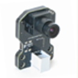

|  |
This block interfaces with NXTCam from mindsensors.com
At setup time, NXTCam allows you to define object(s) in it's environment by color. At runtime, it can track object(s), and provide you it's color and bounding box. If you have not already, please install NXTCamView program developed by Paul Tingey from sourceforge.net. |